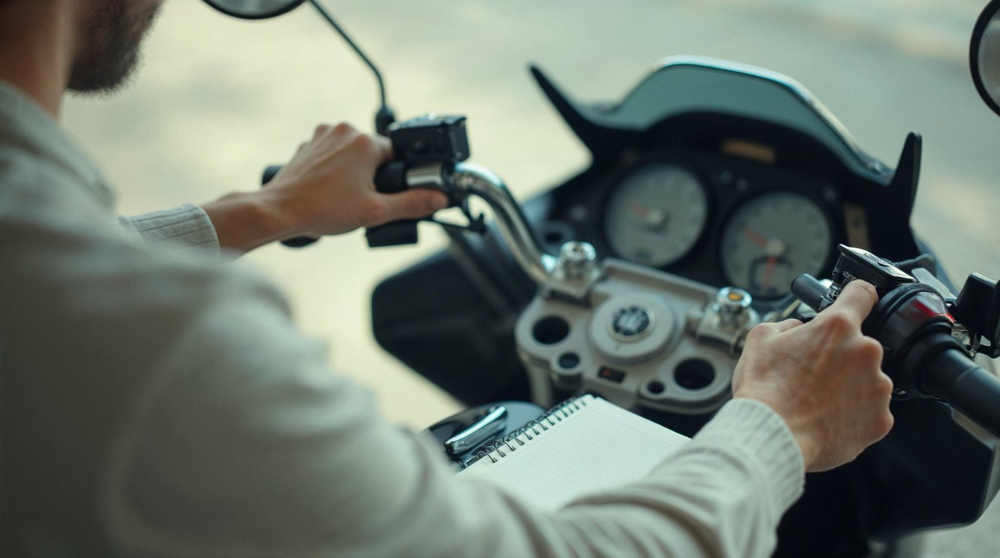

이종호 한의사 감수좋은꿈참사랑한의원 대표원장 (한의사 면허번호 19769)발행 2026-11-24 · 수정 2026-11-25
이 글의 차례
다시 오토바이에 오르기 전에는 영상 검사로 큰 손상이 없는지 먼저 확인하고, 고개 돌리기와 핸들 쥐기가 편한지 점검하는 것이 순서입니다. 배달 일을 하다 넘어지거나 차와 부딪힌 뒤 생계 때문에 서둘러 다시 오토바이에 오르려는 분들이 있는데, 막상 타 보면 고개를 돌려 뒤를 볼 때 목이 걸리거나 교차로에서 몸이 먼저 굳어 놀란다는 이야기를 하십니다.
머리를 부딪혔거나 두통·구토·어지럼이 있다면 영상 검사가 가능한 병원을 먼저 찾으세요.
왜 이런 불편이 생길 수 있나요
- 넘어지거나 부딪힐 때 목과 어깨, 손목에 충격이 가해지면 움직일 때 걸리는 느낌이 남을 수 있습니다.
- 사고 장면이 몸에 남아 비슷한 상황에서 몸이 먼저 굳거나 심장이 뛰는 분도 있습니다.
- 서둘러 일을 다시 시작하면 회복 중인 부위에 다시 부담이 쌓이기 쉽습니다.
- 사고 뒤 잠을 설치면 긴장과 통증이 함께 길어지기도 합니다.
먼저 이렇게 여쭙니다
- 사고는 언제, 어떻게 났고 영상 검사를 받으셨나요?
- 고개를 좌우로 돌리거나 핸들을 꽉 쥘 때 불편한 곳이 있나요?
- 사고 장소나 비슷한 길을 지날 때 긴장되거나 심장이 뛰나요?
- 잠을 설치거나 사고 장면이 자꾸 떠오르나요?
일상에서 먼저 해 볼 수 있는 것
- 다시 타기 전에 사람과 차가 적은 곳에서 짧게 연습해 보기
- 처음 며칠은 운행 시간을 줄이고 쉬는 간격을 늘리기
- 사고 때 쓴 헬멧과 보호 장비는 손상 여부를 확인하고 필요하면 바꾸기
- 불편했던 동작과 시간을 메모해 진료 때 알려 주기
상황별 예시
- 예를 들어 저녁 주문이 몰리는 시간에 집중해서 배달하던 분이 사고 뒤 처음 복귀하는 경우에는 바쁜 시간대보다 주문이 덜 몰리는 시간에 짧게 시작해 보고, 고개 돌리기와 브레이크 잡기가 편한지 확인한 뒤 시간을 늘리는 순서를 함께 정합니다.
- 예를 들어 교차로에서 옆에서 오던 차와 부딪힌 뒤 같은 교차로를 지날 때마다 몸이 굳는 경우에는 당분간 다른 경로를 고르는 방법과 함께, 잠과 놀람 반응이 얼마나 이어지는지 여쭙고 필요하면 마음 건강 진료도 함께 안내합니다.
- 예를 들어 넘어지며 손으로 땅을 짚은 뒤 손목이 시큰한 경우에는 스로틀을 감고 브레이크 레버를 잡는 동작이 아픈지 확인하고, 뼈 부위를 누를 때 아프거나 붓기가 크면 영상 검사를 먼저 받으시도록 안내합니다.
스스로 점검해 보세요
다시 타기 전날, 아래 동작을 천천히 해 보세요.
- 고개를 좌우로 돌려 어깨 너머를 볼 수 있다
- 핸들을 꽉 쥐고 10초쯤 버텨도 손목이나 손이 아프지 않다
- 브레이크 레버를 여러 번 잡았다 놓아도 손가락이 저리지 않다
- 30분쯤 앉아 있다 일어날 때 허리를 바로 펼 수 있다
- 헬멧을 쓰고 고개를 숙였다 들 때 목이 걸리지 않는다
- 사고 장소나 비슷한 길을 떠올려도 심장이 크게 뛰지 않는다
- 전날 밤 잠을 설치지 않고 잤다
하나라도 '아니오'가 있다면 그 동작이 편해질 때까지 운행 시간을 줄이고, 진료 때 어떤 항목이 걸렸는지 알려 주세요.
한의원에서 함께 살필 수 있는 경우
- 고개 돌리기나 핸들 쥐기가 불편한 경우 목·어깨·손목의 움직임을 함께 살핍니다.
- 사고 뒤 긴장과 놀람이 계속되는 경우 잠과 마음 상태를 함께 여쭙니다.
- 허리나 엉덩이 통증이 남은 경우 앉는 자세와 움직임을 함께 살핍니다.
좋은꿈참사랑한의원에서는 첫 방문에 사고 경위와 불편한 동작을 먼저 듣고, 맥을 짚고 혀와 배를 살핀 뒤 고개 돌리기·핸들 쥐기·앉았다 일어서기를 직접 해 보며 확인합니다. 필요하다고 판단될 때 초음파 등으로 아픈 부위를 살핀 뒤 침·약침·추나·온열 등을 상태에 맞춰 정하고, 영상 검사가 먼저 필요한 경우에는 함께 안내합니다.
다음에 오시면 지난번 이후 운행 시간과 불편했던 동작이 어땠는지 이어서 여쭙습니다. 자동차보험 접수 번호가 있으면 접수할 때 알려 주시고, 업무 중 사고의 보험 처리나 진료 접수에 필요한 것은 상황마다 달라 방문 전 전화(02-815-7510)로 확인해 주세요.
얼마나 지켜보고 언제 상담할까요
- 영상 검사에서 큰 손상이 없다는 확인을 받은 뒤라도 처음 며칠은 운행 시간을 줄이고, 하루가 끝날 때 목·허리·손목 불편을 0~10점으로 적어 보세요.
- 운행 시간을 늘릴 때마다 불편 점수가 다시 올라가거나, 일주일이 지나도 고개를 돌릴 때 걸리는 느낌이 그대로라면 운행을 더 늘리기 전에 상담을 받아 보시기를 권합니다.
- 사고 장면이 계속 떠오르거나 잠을 설치는 날이 2주 넘게 이어지면 통증과 함께 마음 상태도 진료에서 이야기해 주세요.
- 머리를 부딪혔거나 두통·구토·어지럼, 손발 힘 빠짐이 있다면 지켜보지 말고 바로 응급실을 찾으세요.

이렇게 기록해 오시면 상담이 쉬워집니다
- 사고 날짜와 상황, 받은 영상 검사 결과
- 불편한 동작(고개 돌리기, 핸들 쥐기, 오래 앉기)
- 비슷한 길을 지날 때의 긴장, 잠의 변화
- 하루 운행 계획과 쉬는 간격
이런 증상은 먼저 확인이 필요합니다
- 머리를 부딪혔거나 사고 뒤 두통·구토·어지럼이 있는 경우(영상 검사가 가능한 병원 먼저)
- 손발에 힘이 빠지거나 감각이 둔해진 경우
- 뼈 부위를 누르면 아프고 붓거나 멍이 커지는 경우
- 사고 장면 때문에 일상이 힘들거나 스스로를 해칠 생각이 드는 경우(☎ 109에 바로 연락)
사고 직후에는 응급 확인이 먼저입니다. 머리를 부딪혔거나 의식이 흐렸던 적이 있다면 영상 검사가 가능한 병원을 먼저 찾으세요. 복용 중인 약은 처방한 의사와 상의 없이 줄이거나 끊지 않습니다. 두통이 점점 심해지거나 구토, 팔다리 힘 빠짐이 있다면 바로 응급실을 찾으세요.
관련 글
- 사고 뒤 운전대를 다시 잡기가 무서워요
- 배달 오토바이를 오래 타서 허리가 뻐근하고 손목·손이 저릴 때는 어떻게 살피나요?
- 교통사고 뒤 한의원에는 언제 가면 되나요?

여쭙는 것
- 사고는 언제, 어떻게 났고 영상 검사를 받으셨나요?
- 고개를 좌우로 돌리거나 핸들을 꽉 쥘 때 불편한 곳이 있나요?
- 사고 장소나 비슷한 길을 지날 때 긴장되거나 심장이 뛰나요?
생활에서 해 볼 것
- 다시 타기 전에 사람과 차가 적은 곳에서 짧게 연습해 보기
- 처음 며칠은 운행 시간을 줄이고 쉬는 간격을 늘리기
- 사고 때 쓴 헬멧과 보호 장비는 손상 여부를 확인하고 필요하면 바꾸기
한의원에서 함께 살필 것
- 고개 돌리기나 핸들 쥐기가 불편한 경우 목·어깨·손목의 움직임을 함께 살핍니다.
- 사고 뒤 긴장과 놀람이 계속되는 경우 잠과 마음 상태를 함께 여쭙니다.
- 허리나 엉덩이 통증이 남은 경우 앉는 자세와 움직임을 함께 살핍니다.
먼저 확인이 필요한 신호
- 머리를 부딪혔거나 사고 뒤 두통·구토·어지럼이 있는 경우(영상 검사가 가능한 병원…
- 손발에 힘이 빠지거나 감각이 둔해진 경우
- 뼈 부위를 누르면 아프고 붓거나 멍이 커지는 경우
한눈에 보는 표
| 구분 | 핵심 |
|---|---|
| 여쭙는 것 | 사고는 언제, 어떻게 났고 영상 검사를 받으셨나요? 고개를 좌우로 돌리거나 핸들을 꽉 쥘 때 불편한 곳이 있나요? |
| 생활에서 해 볼 것 | 다시 타기 전에 사람과 차가 적은 곳에서 짧게 연습해 보기 처음 며칠은 운행 시간을 줄이고 쉬는 간격을 늘리기 |
| 한의원에서 함께 살필 것 | 고개 돌리기나 핸들 쥐기가 불편한 경우 목·어깨·손목의 움직임을 함께 살핍니다. 사고 뒤 긴장과 놀람이 계속되는 경우 잠과 마음 상태를 함께 여쭙니다. |
| 먼저 확인이 필요한 신호 | 머리를 부딪혔거나 사고 뒤 두통·구토·어지럼이 있는 경우(영상 검사가 가능한 병원 먼저) 손발에 힘이 빠지거나 감각이 둔해진 경우 |
자주 묻는 질문
언제부터 다시 타도 되나요?
상태와 하는 일에 따라 달라 한 가지로 말씀드리기 어렵습니다. 검사 결과와 움직임을 함께 확인한 뒤 진료 때 이야기 나눕니다.
보험 처리는 어떻게 하나요?
처리 절차는 보험사나 관련 기관에 확인이 필요합니다. 한의원에서는 접수할 때 필요한 진료 기록 발급을 안내해 드리며, 진료 접수에 필요한 것은 방문 전 전화로 확인해 주세요.
운행 중 갑자기 목이 아프면 어떻게 하나요?
안전한 곳에 세우고 잠시 쉬세요. 통증이 계속되거나 팔 저림, 두통이 함께 오면 그날 운행을 멈추고 진료를 받으시기를 권합니다.
사고 때 쓴 헬멧을 계속 써도 되나요?
겉보기에 멀쩡해도 큰 충격을 받은 헬멧은 안쪽 보호층이 상했을 수 있습니다. 제조사 안내를 확인하고, 손상이 의심되면 바꾸시기를 권합니다.
진통제를 먹고 타도 될까요?
약은 처방한 의사나 약사의 안내를 따라 주세요. 통증 때문에 고개 돌리기나 브레이크 잡기가 불편하다면 약으로 버티기보다 그날 운행을 줄이고 진료 때 알려 주시기를 권합니다.
진료 시간은 어떻게 되나요?
좋은꿈참사랑한의원은 평일 09:30~20:00(점심 13:00~14:00), 토·일·공휴일 09:30~15:00에 진료합니다.
좋은꿈참사랑한의원은 재진 때 지난번 이야기부터 이어서 여쭙니다. 진료시간과 예약은 오시는 길에서 확인하세요.
어디서 상담받을 수 있나요?
좋은꿈참사랑한의원은 서울 동작구 만양로2길 2 신성빌딩 3층·5층(서울 동작구 상도동, 7호선 상도역 3번 출구 근처)에 있습니다. 한의사 3명(이종호 대표원장, 조영기 수석진료원장, 정원영 진료원장)이 진료합니다. 진료시간은 평일 09:30~20:00(점심 13:00~14:00), 토·일·공휴일 09:30~15:00이며, 방문 전 전화로 확인을 권합니다. 예약은 네이버 예약, 카카오톡 상담, 전화 02-815-7510로 받습니다.
이 글은 일반적인 건강 정보이며 개인의 진단이나 치료를 대신하지 않습니다. 증상이 있거나 복용 중인 약이 있다면 진료를 통해 확인하세요. 치료 효과는 개인마다 다를 수 있습니다.
작성 기준: 일반적으로 알려져 있는 건강 정보를 참고해 정리했습니다(대표원장 감수). 증상 기록은 1~2주 동안 하루 1회, 비슷한 시간에 적어 오시면 지난 상태와 비교하기 쉽습니다.